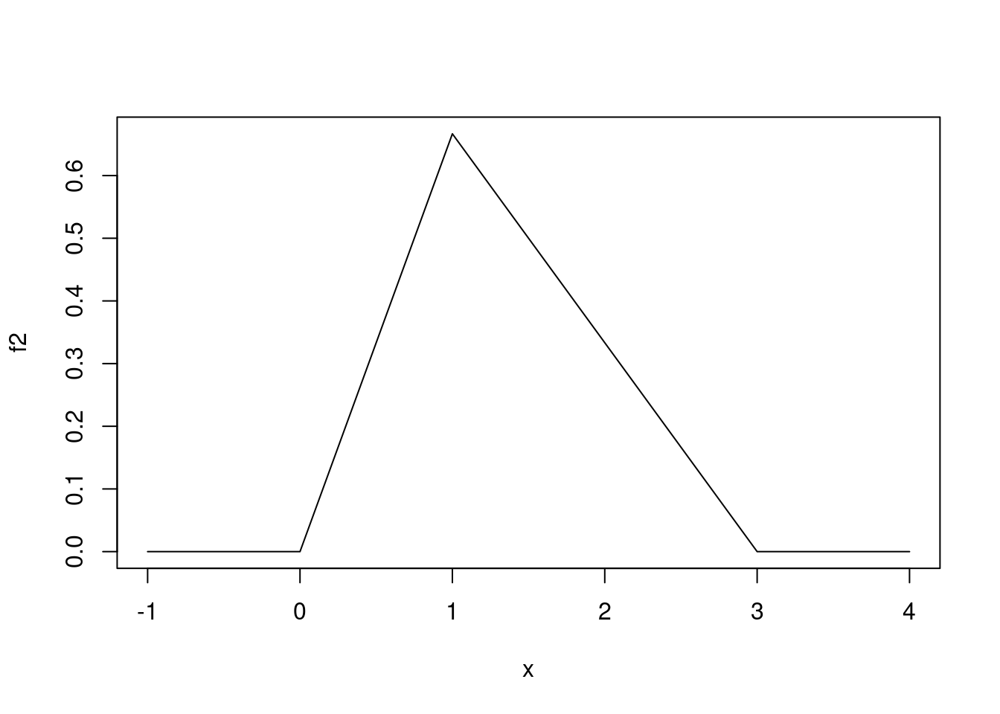
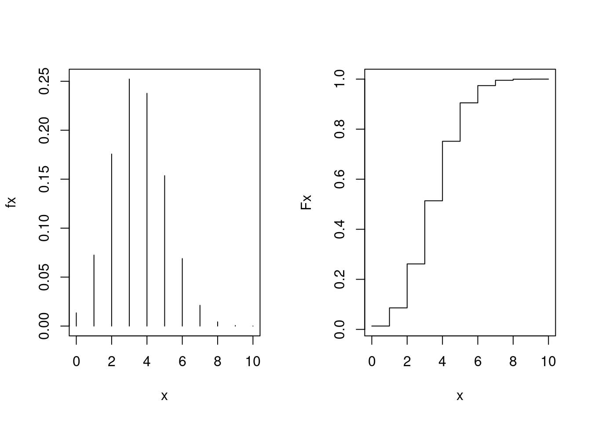

7 Probabilidade e variáveis aleatórias
7.1 Conceitos básicos sobre distribuições de probabilidade
O objetivo desta sessão é mostrar o uso de funções do R em problemas de probabilidade. Exercícios que podem (e devem!) ser resolvidos analiticamente, serão utilizados para ilustrar o uso do programa e alguns de seus recursos para análises numéricas.
Os problemas desta sessão foram retirados do livro de Bussab e Morettin (2017). Veja também os códigos do R dos exemplos do livro para os capítulos 6 e 7, disponíveis aqui.
Exemplo 1: (Adaptado de Bussab e Morettin, cap. 7 ex. 1)
Dada a função
\[ \ f(x) = \left\{ \begin{array}{ll} 2 e^{-2x} & \mbox{ , se $ \; x \geq 0$} \cr 0 & \mbox{ , se $ \; x < 0$} \end{array} \right. \ \]
- Mostre que está função é uma f.d.p.
- Calcule a probabilidade de que \(X > 1\).
- calcule a probabilidade de que \(0.2 < X < 0.8\).
Para ser f.d.p. a função não deve ter valores negativos e deve integrar
1 em seu domínio. Vamos começar definindo esta função como uma função
no R para qual daremos o nome de f1.
f1 <- function(x){
fx <- ifelse(x < 0, 0, 2 * exp(-2 * x))
return(fx)
}A seguir fazemos o gráfico da função. Como a função tem valores positivos para \(x\) no intervalo de zero a infinito, temos que definir um limite em \(x\) até onde vai o gráfico da função. Vamos achar este limite tentando vários valores, conforme mostrado nos comandos abaixo.
par(mfrow = c(2, 2))
plot(f1)
plot(f1, from = 0, to = 5)
plot(f1, from = 0, to = 7)
plot(f1, from = 0, to = 10)
par(mfrow = c(1, 1))
Para verificar que a integral da função é igual a 1 podemos usar a
função integrate(), que efetua integração numérica. A função recebe
como argumentos o objeto com a função a ser integrada e os limites de
integração. Neste exemplo o objeto é f1 definido acima, e o domínio da
função é \([0, \infty)\). A saída da função mostra o valor da integral
acima, e o erro máximo da aproximação numérica.
integrate(f1, lower = 0, upper = Inf)
1 with absolute error < 5e-07Para fazer os cálculos pedidos nos itens (b) e (c) lembramos que a probabilidade é dada pela área sob a curva da função no intervalo pedido. Desta forma as soluções seriam dadas pelas expressões
\[\begin{eqnarray*} p_b & = & P(X > 1) = \int_1^\infty f(x) dx = \int_1^\infty 2\,e^{-2x} dx \\ p_c & = & P(0,2 < X < 0,8) = \int_{0,2}^{0,8} f(x) dx = \int_{0.2}^{0.8} 2\,e^{-2x} dx \, \end{eqnarray*}\]
cuja representação gráfica é mostrada na abaixo.
Os comandos a seguir mostram como fazer o gráfico dessas funções. O
comando plot() desenha o gráfico principal, e para destacar as
áreas que correspondem às probabilidades pedidas vamos usar a função
polygon(). Esta função adiciona a um gráfico um polígono que é
definido pelas coordenadas de seus vértices. Para sombrear a área usa-se
o argumento density. Finalmente, para escrever um texto no gráfico
usamos a função text() com as coordenadas de posição do texto.
plot(f1, from = 0, to = 5)
polygon(x = c(1, seq(1, 5, length.out = 20)),
y = c(0, f1(seq(1, 5,length.out = 20))),
density = 10)
polygon(x = c(0.2, seq(0.2, 0.8, length.out = 20), 0.8),
y = c(0, f1(seq(0.2, 0.8, length.out = 20)), 0),
col = "gray")
text(x = c(1.2, 0.5), y = c(0.1, 0.2),
c(expression(p[b], p[c])))
Oara obter as probabilidades pedidas usamos a função integrate().
integrate(f1, lower = 1, upper = Inf)
0.1353353 with absolute error < 2.1e-05
integrate(f1, lower = 0.2, upper = 0.8)
0.4684235 with absolute error < 5.2e-15Exemplo 2: (Adaptado de Bussab e Morettin, cap. 7 ex. 10)
A demanda diária de arroz em um supermercado, em centenas de quilos, é uma v.a \(X\) com f.d.p. dada por
\[\begin{eqnarray} f(x) = \left\{ \begin{array}{ll} \frac{2}{3}x \mbox{ , se $0 \leq x < 1$} \cr -\frac{x}{3} + 1 \mbox{ , se $ 1 \leq x < 3$} \cr 0 \mbox{ , se $x < 0$ ou $x \geq 3$} \end{array} \right. \end{eqnarray}\]
- Calcular a probabilidade de que sejam vendidos mais que 150 kg.
- Calcular a venda esperada em 30 dias.
Novamente começamos definindo um objeto do R que contém a função dada
acima. Neste caso definimos um vetor do mesmo tamanho do argumento x
para armazenar os valores de \(f(x)\) e a seguir preenchemos os valores
deste vetor para cada faixa de valor de \(x\):
f2 <- function(x){
fx <- numeric(length(x))
fx[x < 0] <- 0
fx[x >= 0 & x < 1] <- (2/3) * x[x >= 0 & x < 1]
fx[x >= 1 & x < 3] <- (-1/3) * x[x >= 1 & x < 3] + 1
fx[x >= 3] <- 0
return(fx)
}A seguir verificamos que a integral da função é 1 e fazemos o seu gráfico conforme mostrado abaixo:
integrate(f2, 0, 3) ## verificando que a integral vale 1
1 with absolute error < 1.1e-15
plot(f2, -1, 4) ## fazendo o gráfico da função
Agora vamos responder às questões levantadas. Na questão (a) pede-se a probabilidade de que sejam vendidos mais que 150 kg (1,5 centenas de quilos), portanto a probabilidade \(P[X > 1,5]\). A probabilidade corresponde à área sob a função no intervalo pedido, ou seja, \(P[X > 1,5] = \int_{1,5}^\infty f(x) dx\), que pode ser vista na figura abaixo.
plot(f2, -1, 4)
polygon(x = c(1.5, 1.5, 3), y = c(0, f2(1.5), 0), dens = 10)A integral pode então ser resolvida numericamente com o comando:
integrate(f2, 1.5, 3)
0.375 with absolute error < 4.2e-15A venda esperada em trinta dias é 30 vezes o valor esperado de venda em
um dia. Para calcular a esperança \(E[X] = \int x f(x) dx\) definimos uma
nova função e resolvemos a integral. A função integrate() retorna uma
lista onde um dos elementos (value) é o valor da integral.
ef2 <- function(x) { x * f2(x) }
integrate(ef2, 0, 3)
1.333333 with absolute error < 7.3e-05
30 * integrate(ef2, 0, 3)$value
[1] 40Finalmente lembramos que os exemplos discutidos aqui são simples e não requerem soluções numéricas, devendo ser resolvidos analiticamente. Utilizamos estes exemplos somente para ilustrar a obtenção de soluções numéricas com o uso do R, que na prática deve ser utilizado em problemas mais complexos onde soluções analíticas não são triviais ou mesmo impossíveis.
Exercícios
- (Adaptado de Bussab e Morettin, cap. 7, ex. 28). Em uma determinada
localidade a distribuição de renda, em u.m. (unidade monetária) é uma
variável aleatória \(X\) com função de distribuição de probabilidade:
\[
f(x) = \left\{ \begin{array}{ll}
\frac{1}{10}x + \frac{1}{10} & \mbox{ se $0 \leq x \leq 2$} \cr
-\frac{3}{40}x + \frac{9}{20} & \mbox{ se $ 2 < x \leq 6$} \cr
0 & \mbox{ se $x < 0$ ou $x > 6$}
\end{array} \right.
\]
- Mostre que \(f(x)\) é uma f.d.p.
- Qual a renda média nesta localidade?
- Calcule a probabilidade de encontrar uma pessoa com renda acima de 4,5 u.m. e indique o resultado no gráfico da distribuição.
- Sabe-se que uma variável aleatória contínua \(X\) é equiprovável no intervalo 10 e 20.
- Apresente o gráfico da função densidade de probabilidade.
- Calcule \(P(X < 15)\).
- Calcule \(P(12 \leq X \leq 18)\).
- Calcule \(E(X)\) e \(V(X)\).
- Dois jogadores se alternam lançando dois dados equilibrados. O jogador A vence o jogo se ocorrer soma 6, enquanto B vencerá se ocorrer 7. Faça um estudo de simulação para responder as seguintes questões:
- Se A começa jogando, qual é a sua probabilidade de vitória?
- Qual é a probabilidade do iniciante, escolhido ao acaso, vencer o jogo?
- A duração, em anos, de uma certa lâmpada especial é uma variável aleatória contínua com densidade dada por:
\[
f(x) = \left\{ \begin{array}{ll}
2 \exp^{-2x} & x \geq 0 \cr
0 & x < 0
\end{array} \right.
\]
- Crie uma função para calcular a função de distribuição acumulado de \(X\).
- Calcule \(P(X > 2)\).
- Calcule \(P(0.5 < X < 1.2)\).
- Calcule \(P(X > 3)\).
- Calcule \(P(X < 3| X > 1)\).
- (Desafio - Problema da ruína do jogador) Dois jogadores participam de um jogo com uma moeda que tem probabilidade de cara igual a \(p\) e de coroa igual a \(q\), sujeito a \(p+q=1\). O jogador A inicia o jogo com \(i\) fichas e ganha mais uma de B, cada vez que der cara. O jogador B começa com \(N-i\) fichas e, em cada lançamento que resultar coroa, ganha uma ficha de A. Para enfatizar a dependência do número inicial de fichas \(i\), denomine por \(p_{(i)}\) a probabilidade do jogador A ficar com todas as fichas, o que implica na ruína de B. Condicione no resultado do primeiro lançamento da moeda, para estabelecer uma relação de recorrência entre os \(p_{(i)'s}\). Usando \(p_{(0)} = 0\) e \(p_{N} = 1\), mostre via simulação que \(p_{(i)} = \frac{1-(q/p)^i}{1-(q/p)^N}\) para \(p \neq \frac{1}{2}\) e \(p_{(i)} = \frac{i}{N}\) para \(p = \frac{1}{2}\).
7.2 Distribuições de Probabilidade
O R inclui funcionalidade para operações com distribuições de probabilidades. Para cada distribuição há 4 operações básicas indicadas pelas letras:
dcalcula a densidade de probabilidade \(f(x)\) no ponto \(x\).pcalcula a função de probabilidade acumulada \(F(x)\) no ponto \(x\).qcalcula o quantil correspondente a uma dada probabilidade.rretorna uma amostra aleatória da distribuição.
Para usar as funções deve-se combinar uma das letras acima com uma
abreviatura do nome da distribuição. Por exemplo, para calcular
probabilidades usamos: pnorm() para normal, pexp() para exponencial,
pbinom() para binomial, ppois() para Poisson e assim por diante.
Vamos ver com mais detalhes algumas distribuições de probabilidades.
7.2.1 Distribuição Normal
A funcionalidade para distribuição normal é implementada por argumentos
que combinam as letras acima com o termo norm. Vamos ver alguns
exemplos com a distribuição normal padrão. Por default as funções
assumem a distribuição normal padrão \(N(\mu=0, \sigma^2=1)\).
dnorm(-1)
[1] 0.2419707
pnorm(-1)
[1] 0.1586553
qnorm(0.975)
[1] 1.959964
rnorm(10)
[1] -0.50219235 0.13153117 -0.07891709 0.88678481 0.11697127 0.31863009
[7] -0.58179068 0.71453271 -0.82525943 -0.35986213O primeiro valor acima, de dnorm(-1), corresponde ao valor da densidade
da normal
\[ f(x) = \frac{1}{\sigma\sqrt{2 \pi}}\exp \left[ -\frac{1}{2} \left( \frac{x - \mu}{\sigma} \right)^2 \right] \]
com parâmetros \((\mu=0, \sigma^2=1)\) no ponto \(x = -1\). Portanto, o mesmo valor seria obtido substituindo \(x\) por \(-1\) na expressão da normal:
mu <- 0
sigma <- 1
x <- -1
(1/(sigma * sqrt(2*pi))) * exp((-1/2) * ((x - mu)/sigma)^2)
[1] 0.2419707A função pnorm(-1) calcula a probabilidade \(P(X \leq -1)\). O comando
qnorm(0.975) calcula o valor de \(a\) tal que \(P(X \leq a) = 0.975\).
Finalmente, o comando rnorm(10) gera uma amostra aleatória de 10
elementos da normal padrão. Note que os valores que você obtêm rodando
este comando podem ser diferentes dos mostrados acima.
As funções acima possuem argumentos adicionais, para os quais valores
padrão (default) foram assumidos, e que podem ser modificados. Usamos
args() para ver os argumentos de uma função e help() para visualizar
a documentação detalhada:
args(rnorm)
function (n, mean = 0, sd = 1)
NULLAs funções relacionadas à distribuição normal possuem os argumentos
mean e sd para definir a média e o desvio padrão da distribuição que
podem ser modificados como nos exemplos a seguir. Note nestes exemplos
que os argumentos podem ser passados de diferentes formas.
qnorm(0.975, mean = 100, sd = 8)
[1] 115.6797
qnorm(0.975, m = 100, s = 8)
[1] 115.6797
qnorm(0.975, 100, 8)
[1] 115.6797Observação: na segunda linha de comando acima, foi utilizado um recurso do R chamado partial matching. Isso significa que nomes de argumentos de funções podem ser especificados pelo seu nome parcial, ou seja, com apenas o início do nome, desde que não haja ambiguação com outros argumentos.
Para informações mais detalhadas pode-se usar help(). O comando
help(rnorm)irá exibir em uma janela a documentação da função que pode também ser
chamada com ?rnorm. Note que ao final da documentação são apresentados
exemplos que podem ser rodados pelo usuário e que auxiliam na
compreensão da funcionalidade. Note também que as 4 funções relacionadas
à distribuição normal são documentadas conjuntamente, portanto
help(rnorm), help(qnorm), help(dnorm) e help(pnorm) irão exibir
a mesma documentação.
Cálculos de probabilidades usuais, para os quais utilizavamos tabelas estatísticas podem ser facilmente obtidos como no exemplo a seguir.
Seja \(X\) uma v.a com distribuição \(N(100, 100)\). Calcular as probabilidades:
- \(P[X < 95]\)
- \(P[90 < X < 110]\)
- \(P[X > 95]\)
Calcule estas probabilidades de forma usual, usando a tabela da normal. Depois compare com os resultados fornecidos pelo R. Os comandos do R para obter as probabilidades pedidas são:
## P[X < 95]
pnorm(95, 100, 10)
[1] 0.3085375
## P[90 < X < 110]
pnorm(110, 100, 10) - pnorm(90, 100, 10)
[1] 0.6826895
## P[X > 95] = 1 - P[X < 95]
1 - pnorm(95, 100, 10)
[1] 0.6914625
pnorm(95, 100, 10, lower.tail = FALSE) # melhor
[1] 0.6914625Note que a última probabilidade foi calculada de duas formas diferentes,
a segunda usando o argumento lower.tail que implementa um algorítmo de
cálculo de probabilidades mais estável numericamente, e essa forma é
preferida no lugar de usar o complementar.
A seguir vamos ver comandos para fazer gráficos de distribuições de probabilidade. Vamos fazer gráficos de funções de densidade e de probabilidade acumulada. Estude cuidadosamente os comandos abaixo e verifique os gráficos por eles produzidos.
A figura abaixo mostra gráficos da densidade (esquerda) e probabilidade acumulada (direita) da normal padrão, produzidos com os comandos a seguir. Para fazer o gráfico consideramos valores de \(X\) entre -3 e 3 que correspondem a +/- três desvios padrões da média, faixa que concentra 99,73% da massa de probabilidade da distribuição normal.
par(mfrow = c(1, 2))
plot(dnorm, from = -3, to = 3)
plot(pnorm, from = -3, to = 3)
par(mfrow = c(1, 1))
VEJA a página de ajuda da função
plot.function()para entender os argumentos e demais funcionalidades desta função gráfica para plotar gráficos de funções
A seguinte figura mostra gráficos da densidade (esquerda) e probabilidade acumulada (direita) da \(N(100, 64)\). Para fazer estes gráficos tomamos uma sequência de valores de \(X\) entre 70 e 130 e para cada um deles calculamos o valor das funções \(f(x)\) e \(F(x)\). Depois unimos os pontos \((x,f(x))\) em um gráfico e \((x,F(x))\) no outro.
par(mfrow = c(1, 2))
x <- seq(70, 130, length.out = 100)
fx <- dnorm(x, 100, 8)
plot(x, fx, type = "l")
Fx <- pnorm(x, 100, 8)
plot(x, Fx, type = "l")
par(mfrow = c(1, 1))
Note que, alternativamente, os mesmos gráficos poderiam ser produzidos
com os comandos a seguir, onde fazemos usa da função plot.function().
par(mfrow = c(1, 2))
plot(function(x) dnorm(x, 100, 8), from = 70, to = 130)
plot(function(x) pnorm(x, 100, 8), from = 70, to = 130)
par(mfrow = c(1, 1))
Comandos usuais do R podem ser usados para modificar a aparência dos gráficos. Por exemplo, podemos incluir títulos e mudar texto dos eixos conforme mostrado abaixo.
plot(dnorm, from = -3, to = 3,
xlab = "Valores de X",
ylab = "Densidade de probabilidade")
title("Distribuicão Normal\nX ~ N(0, 1)")
Os demais comandos abaixo mostram como colocar diferentes densidades em um
mesmo gráfico, usando o argumento add = TRUE.
plot(function(x) dnorm(x, 100, 8), 60, 140, ylab = 'f(x)')
plot(function(x) dnorm(x, 90, 8), 60, 140, add = TRUE, col = 2)
plot(function(x) dnorm(x, 100, 15), 60, 140, add = TRUE, col = 3)
legend(120, 0.05, fill = 1:3,
legend = c("N(100,64)", "N(90,64)", "N(100,225)"))7.2.2 Distribuição Binomial
Cálculos para a distribuição binomial são implementados combinando as
letras básicas vistas acima com o termo binom. Vamos primeiro
investigar os argumentos e a documentação com args() e help().
args(dbinom)
function (x, size, prob, log = FALSE)
NULLhelp(dbinom)Seja \(X\) uma v.a com distribuição binomial, com \(n=10\) e \(p=0.35\). Vamos ver os comandos do R para:
- Fazer o gráfico da função de probabilidade.
- Idem para a função de distribuição acumulada.
- Calcular \(P(X = 7)\).
- Calcular \(P(X \leq 7)\).
- Calcular \(P(X > 7)\).
- Calcular \(P(3 < X \leq 6)\).
Note que sendo uma distribuição discreta de probabilidades os gráficos são diferentes dos obtidos para a distribuição normal e os cálculos de probabilidades devem considerar as probabilidades nos pontos específicos. Os gráficos das funções de probabilidade e distribuição são mostrados abaixo.
par(mfrow = c(1, 2))
x <- 0:10
fx <- dbinom(x, size = 10, prob = 0.35)
plot(x, fx, type = "h")
Fx <- pbinom(x, size = 10, prob = 0.35)
plot(x, Fx, type = "s")
par(mfrow = c(1, 1))
As probabilidades pedidas são obtidas com os comandos a seguir.
## P[X = 7]
dbinom(7, size = 10, prob = 0.35)
[1] 0.02120302
## P[X <= 7]
pbinom(7, size = 10, prob = 0.35)
[1] 0.9951787
# OU
sum(dbinom(0:7, size = 10, prob = 0.35))
[1] 0.9951787
## P[X > 7]
1 - pbinom(7, size = 10, prob = 0.35)
[1] 0.004821265
pbinom(7, size = 10, prob = 0.35, lower.tail = FALSE) # melhor
[1] 0.004821265
## P[3 < X <= 6]
pbinom(6, 10, 0.35) - pbinom(3, 10, 0.35)
[1] 0.4601487
# OU
sum(dbinom(4:6, 10, 0.35))
[1] 0.46014877.2.3 Distribuição de Poisson
Definição: Seja um experimento realizado nas seguintes condições: i. As ocorrências são independentes; ii. As ocorrências são aleatórias; iii. A variável aleatória \(X\) é o número de ocorrências de um evento ao longo de algum intervalo (de tempo ou espaço);
Denominamos esse experimento de processo de Poisson. Vamos associar a v.a \(X\) como sendo o número de ocorrências em um intervalo. Portanto \(X\) poderá assumir os valores \(0, 1, \ldots,\) (sem limite superior).
A distribuição de Poisson é utilizada para descrever a probabilidade do número de ocorrências em um intervalo contínuo (de tempo ou espaço). No caso da distribuição binomial, a variável de interesse era o número de sucessos em um intervalo discreto (\(n\) ensaios de Bernoulli). A unidade de medida (tempo ou espaço) é uma variável contínua, mas a variável aleatória, número de ocorrências, é discreta.
Uma v.a \(X\) segue o modelo de Poisson se surge a partir de um processo de Poisson, e sua função de probabilidade for dada por
\[ P(X = x) = \frac{e^{-\mu} \mu^x}{x!}, \quad \quad x = 0, 1, \ldots \]
onde
\[ \mu = \lambda \cdot t \]
O parâmetro \(\mu\) indica a taxa de ocorrência (\(\lambda\)) por unidade de medida (\(t\)), ou seja,
\[ \lambda = \text{taxa de ocorrência} \quad \text{e} \quad t = \text{intervalo de tempo ou espaço} \]
- Notação: \(X \sim \text{Pois}(\mu)\)
- Esperança e variância: \(\text{E}(X) = \mu = \text{Var}(X)\)
Alguns exemplos de gráficos da distribuição de Poisson com diferentes valores do parâmetro \(\mu\).
par(mfrow=c(2,2))
plot(0:30, dpois(x = 0:30, lambda = 1), type = "h",
xlab = "X", ylab = "P[X = x]", main = expression(mu == 1),
ylim = c(0,.4))
plot(0:30, dpois(x = 0:30, lambda = 5), type = "h",
xlab = "X", ylab = "P[X = x]", main = expression(mu == 5),
ylim = c(0,.4))
plot(0:30, dpois(x = 0:30, lambda = 10), type = "h",
xlab = "X", ylab = "P[X = x]", main = expression(mu == 10),
ylim = c(0,.4))
plot(0:30, dpois(x = 0:30, lambda = 15), type = "h",
xlab = "X", ylab = "P[X = x]", main = expression(mu == 15),
ylim = c(0,.4))
- Exemplo: As chamadas telefônicas chegam a uma delegacia de
polícia à uma taxa de 8 chamadas por hora, em dias úteis.
- Quantas chamadas de emergência são esperadas em um período de 15 minutos?
- Qual a probabilidade de nenhuma chamada em um período de 15 minutos? c. Qual a probabilidade de ocorrer pelo menos duas chamadas no período de 15 minutos? d. Qual a probabilidade de ocorrer exatamente duas chamadas em 20 minutos?
## a) E(X) = mu = lambda . t
lambda <- 8/60 # 8 chamadas/60 minutos
t <- 15 # 15 minutos
(mu <- lambda * t)
[1] 2
## b) P[x = 0]
ppois(0, mu)
[1] 0.1353353
dpois(0, mu)
[1] 0.1353353
## c) P[X >= 2] = 1 - P[X < 2]
1 - ppois(1, mu)
[1] 0.5939942
ppois(1, mu, lower.tail = FALSE)
[1] 0.5939942
## d) P[X = 2]
t <- 20
(mu <- lambda * t)
[1] 2.666667
dpois(2, mu)
[1] 0.2470523- Exemplo: Suponha que 150 erros de impressão são distribuídos aleatoriamente em um livro de 200 páginas. Encontre a probabilidade de que em 2 páginas contenham:
- nenhum erro de impressão
- três erros de impressão c. um ou mais erros de impressão
## lambda = taxa de ocorrência por página
lambda <- 150/200
## intervalo de interesse
t <- 2
## Parâmetro mu = lambda . t
(mu <- lambda * t)
[1] 1.5
## a) P[X = 0]
dpois(0, mu)
[1] 0.2231302
## b) P[X = 3]
dpois(3, mu)
[1] 0.1255107
## c) P[X >= 1] = 1 - P[X < 1]
1 - ppois(0, mu)
[1] 0.7768698
ppois(0, mu, lower.tail = FALSE)
[1] 0.77686987.2.4 Distribuição Uniforme
7.2.4.1 Uniforme Contínua
Para a distribuição uniforme contínua usa-se as funções *unif() onde
* deve ser \(p\), \(q\), \(d\) ou \(r\) como mencionado anteriormente. Nos
comandos a seguir inspecionamos os argumentos, sorteamos 5 valores da
\(U(0,1)\) e calculamos a probabilidade acumulada até 0,75.
args(runif)
function (n, min = 0, max = 1)
NULL
runif(5)
[1] 0.5358112 0.7108038 0.5383487 0.7489722 0.4201015
punif(0.75)
[1] 0.75Portanto, o default é uma distribuição uniforme no intervalo \([0,1]\)
e os argumentos opcionais são min e max. Por exemplo, para simular 5
valores de \(X \sim U(5, 20)\) usamos:
runif(5, min = 5, max = 20)
[1] 7.571303 16.554524 18.229304 13.236451 9.1658567.2.4.2 Uniforme Discreta
Não há entre as funções básicas do R uma função específica para a
distribuição uniforme discreta com opções de prefixos \(r,d,p\) e \(d\),
provavelmente devido a sua simplicidade, embora algumas outras funções
possam ser usadas. Por exemplo para sortear números pode-se usar
sample(), como no exemplo a seguir onde são sorteados 15 valores de
uma uniforme discreta com valores (inteiros) entre 1 e 10 (\(X \sim U_d(1,10)\)).
sample(1:10, size = 15, replace = TRUE)
[1] 2 3 4 4 4 5 7 9 4 2 6 7 1 6 97.2.5 A função sample()
A função sample() não é restrita à distribuição uniforme discreta,
podendo ser usada para sorteios, com ou sem reposição (argumento
replace, que por padrão é FALSE, ou seja, sem reposição), com a
possibilidade de associar diferentes probabilidades a cada elemento
(argumento prob, que por padrão associa probabilidades iguais para
todos os elementos).
args(sample)
function (x, size, replace = FALSE, prob = NULL)
NULLVejamos alguns exemplos:
- Sorteio de 3 números entre inteiros de 0 a 20.
sample(0:20, size = 3)
[1] 8 20 10- Sorteio de 5 números entre os elementos de um certo vetor
x.
x <- c(23, 34, 12, 22, 17, 28, 18, 19, 20, 13, 18)
sample(x, size = 5)
[1] 18 23 20 28 22- Sorteio de 10 números entre os possíveis resultados do lançamento de um dado, com reposição.
sample(1:6, size = 10, replace = TRUE)
[1] 6 3 5 6 3 6 4 3 3 3- Idem ao anterior, porém agora com a probabilidade de cada face proporcional ao valor da face.
sample(1:6, size = 10, replace = TRUE, prob = 1:6)
[1] 6 4 3 6 5 3 2 6 5 5Este último exemplo ilustra ainda que os valores passados para o
argumento prob não precisam ser probabilidades, são apenas entendidos
como pesos. A própria função trata isto internamente fazendo a
ponderação adequada.
7.3 Complementos sobre distribuições de probabilidade
Agora que já nos familiarizamos com o uso das distribuições de probabilidade vamos ver alguns detalhes adicionais sobre seu funcionamento.
7.3.1 Probabilidades e integrais
A probabilidade de um evento em uma distribuição contínua é a área sob a curva da distribuição. Vamos reforçar esta idéia revisitando um exemplo visto na distribuição normal.
Seja \(X\) uma v.a com distribuição \(N(100, 100)\). Para calcular a probabilidade \(P(X < 95)\) usamos o comando:
pnorm(95, mean = 100, sd = 10)
[1] 0.3085375Vamos agora “esquecer” o comando pnorm() e ver uma outra forma de
resolver usando integração numérica. Lembrando que a normal tem a função
de densidade dada por
\[ f(x) = \frac{1}{\sigma\sqrt{2 \pi}}\exp \left[ -\frac{1}{2} \left( \frac{x - \mu}{\sigma} \right)^2 \right]. \]
Podemos então definir uma função no R para calcular qualquer densidade em \(x\)
fn <- function(x, mu, sigma){
(1/(sigma * sqrt(2*pi))) * exp((-1/2) * ((x - mu)/sigma)^2)
}Para obter o gráfico desta distribuição, usamos o fato que
a maior parte da massa da função está no intervalo entre a média +/- três
desvios padrões, portanto entre 70 e 130. Podemos então fazer como nos
comandos que se seguem. Para marcar no gráfico a área que corresponde a
probabilidade pedida criamos um polígono com coordenadas ax e ay
definindo o perímetro desta área.
x <- seq(70, 130, length.out = 200)
fx <- fn(x, mu = 100, sigma = 10)
plot(x, fx, type = "l")
ax <- c(70, 70, x[x < 95], 95, 95)
ay <- c(0, fn(70, 100, 10), fx[x < 95], fn(95, 100, 10),0)
polygon(ax, ay, density = 10)
Para calcular a área pedida sem usar a função pnorm() podemos usar a
função de integração numérica. Note que esta função, diferentemente da
pnorm() reporta ainda o erro de aproximação numérica.
integrate(fn, mu = 100, sigma = 10, lower = -Inf, upper = 95)
0.3085375 with absolute error < 2.1e-06Portanto para os demais ítens do problema, \(P(90 < X < 110)\), e \(P(X > 95)\) fazemos:
integrate(fn, mu = 100, sigma = 10, lower = 90, upper = 110)
0.6826895 with absolute error < 7.6e-15
integrate(fn, mu = 100, sigma = 10, lower = 95, upper = +Inf)
0.6914625 with absolute error < 8.1e-05e os resultados acima evidentemente coincidem com os obtidos
anterioriormente usando pnorm(),
pnorm(110, 100, 10) - pnorm(90, 100, 10)
[1] 0.6826895
pnorm(95, 100, 10, lower.tail = FALSE)
[1] 0.6914625Note ainda que na prática não precisamos definir e usar a função fn(),
pois ela fornece o mesmo resultado que a função dnorm().
Exercícios
Nos exercícios abaixo iremos também usar o R como uma calculadora estatística para resolver alguns exemplos/exercícios de probabilidade tipicamente apresentados em um curso de estatística básica.
- Para \(X \sim N(90, 100)\), obtenha:
- \(P(X \leq 115)\).
- \(P(X \geq 80)\).
- \(P(X \leq 75)\).
- \(P(85 \leq X \leq 110)\).
- \(P(|X - 90| \leq 10)\).
- O valor de \(a\) tal que \(P(90-a \leq X \leq 90+a) = 0.95\).
- Sendo \(X\) uma variável seguindo o modelo
Binomial com parâmetros \(n = 15\) e \(p = 0.4\), pergunta-se:
- \(P(X \geq 14)\).
- \(P(8 < X \leq 10)\).
- \(P(X < 2 \; \mbox{ ou } \;\; X \geq 11)\).
- \(P(X \geq 11 \; \mbox{ ou } \;\; X > 13)\).
- \(P(X > 3 \; \mbox{ e } \;\; X < 6)\).
- \(P(X \leq 13 \; | \; X \geq 11)\).
- Uma empresa informa que 30% de suas contas a receber de outras empresas encontram-se vencidas. Se o contador da empresa seleciona aleatoriamente 5 contas, determine a probabilidade de:
- Nenhuma conta estar vencida
- Exatamente duas contas estarem vencidas
- Três ou mais contas estarem vencidas
- Uma empresa recebe 720 emails em um intervalo de 8 horas. Qual a probabilidade de que:
- Em 6 minutos receba pelo menos 3 emails?
- Em 4 minutos não receba nenhum email?
- O processo de empacotamento de uma fábrica de cereais foi ajustado de maneira que uma média de \(\mu = 13,0\) kg de cereal seja colocado em cada caixa. Sabe-se que existe uma pequena variabilidade no enchimento dos pacotes devido à fatores aleatórios, e que o desvio-padrão do peso de enchimento é de \(\sigma = 0,1\) kg. Assume-se que a distribuição dos pesos tem distribuição normal. Com isso, determine as probabilidades de que uma caixa escolhida ao acaso:
- Pese entre 13,0 e 13,2 kg.
- Tenha um peso maior do que 13,25 kg.
- Pese entre 12,8 e 13,1 kg.
- Pese entre 13,1 e 13,2 kg.
- Faça os seguintes gráficos:
- da função de densidade de uma variável com distribuição de Poisson com parâmetro \(\lambda = 5\).
- da densidade de uma variável \(X \sim N(90, 100)\).
- sobreponha ao gráfico anterior a densidade de uma variável \(Y \sim N(90, 80)\) e outra \(Z \sim N(85, 100)\).
- densidades de distribuições \(\chi^2\) com 1, 2 e 5 graus de liberdade.